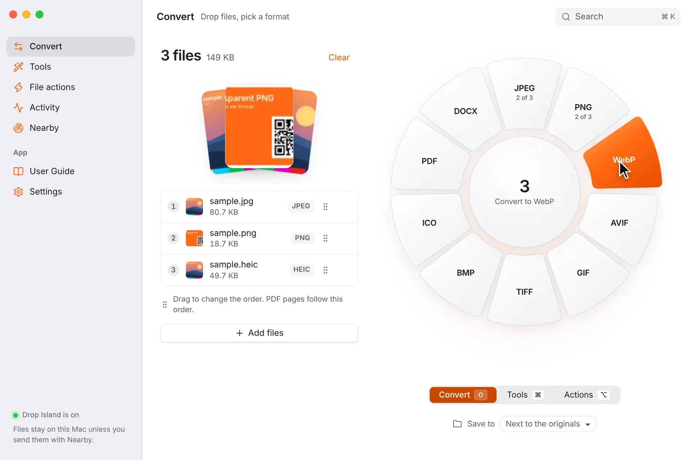
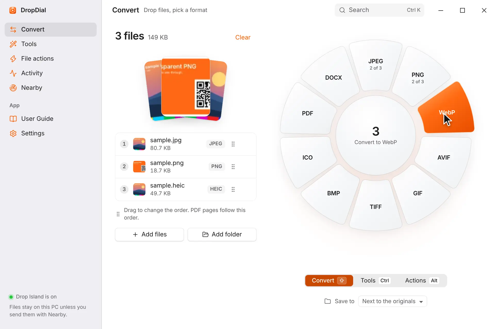

DropDial
Drop files, then pick a format on the glass wheel.
Images, video, audio, PDFs, documents and sheets. Everything runs on your Mac or PC, with no account and no uploads.
Free for Mac with Apple silicon or Intel, macOS 12 or later.Free for Windows 10 and 11, 64-bit.A free desktop app for Mac and Windows.Free for Mac and Windows.
Drop. Point. Click.
One wheel for every format. Each file gets its own converted copy, and a file that fails doesn’t stop the rest.
Drop your files
On the DropDial window or the Drop Island at the top of your screen. Or press ⌘OCtrl+O to choose them.
Point at a format
The middle of the wheel says what will happen, like “Convert to WebP”.
Click
Find the new files next to the originals, or in Activity. Your originals never change.
Recording: three photos are dragged onto DropDial. The pointer moves over PNG, PDF and WebP on the wheel, and the middle says “Convert to WebP”. A click converts them, and Activity lists the results.
229 ways to convert on a Mac. 221 on Windows.
Pick a format to see what it can become. HEIC export uses macOS’s own encoder, so only a Mac offers it.
HEIC converts to
32 tools, one drop away.
Edit photos, trim and join videos, clean up audio, sort out PDFs and see where your money went. Each tool opens with a large preview, and only the tools that fit your files are offered.
Recording: three clips are added to Combine videos, the order is changed, 720p is picked and the joined video is saved.
Put two or more videos one after another in a single file.
How to useUse it in your browser.
No install, and nothing uploaded. 19 of DropDial’s tools work right in the browser on an iPhone, Android phone, iPad or any computer.
See all web toolsDrop Island.
A small pill at the top of your screen. Drop files on it without opening the window.
Recording: a video file is dragged to the pill at the top of the screen. A wheel opens under it, GIF is picked, and the island shows progress and then the result.
- Drop, then pickA wheel opens under the pill. Move down onto a format and let go.
- Tools and actions tooHold ⌘ or Ctrl while dragging for tools, ⌥ or Alt for file actions.
- Progress, then resultsThe island shows progress, then Open and Show in folder.
- Out of your wayOn a MacBook it sits in the notch, and it moves aside for full-screen windows.
Send to your other computer.
Like AirDrop, between your Mac and your PC. Files go straight across your own Wi‑Fi or network, never through the internet.
- Up to 10 GB per sendBig files go over several connections at once. On a cable or fast Wi‑Fi 6, 10 GB takes about 2 minutes.
- Encrypted end to endBoth screens show the same 6‑digit code, and nothing comes in until you accept.
- Saved, never replacedFiles land in Downloads → DropDial under new names.
- Off until you turn it onNearby works only on your own network, Mac to PC and back.
Your files stay on your computer.
DropDial has no account, no cloud, no ads and no tracking.
Terms & Privacy- Nothing is uploaded. Converting, the tools and bank statements all work on your computer.
- A locked-down sandbox. Files are opened where a damaged or harmful file can’t reach the rest of your computer.
- Originals never change. Results are new files, and an existing file is never overwritten.
- Nearby is off until you turn it on. It works only on your own network, and nothing comes in until you accept.
- Hidden details stay private. Converted images drop details such as location by default.
Made for Mac and Windows.
The same wheel, tools and Nearby on both, in each system’s own look: traffic lights and ⌘ on a Mac, window buttons and Ctrl on Windows.


Questions.
Is DropDial free?
Yes. DropDial is free to use, for personal and work use.
Does DropDial upload my files?
No. Converting, the tools and bank statements all work on your computer. There are no accounts, uploads or tracking. Files go to another computer only when you send them with Nearby.
Which formats can it convert?
Images: JPEG, PNG, WebP, HEIC, TIFF, AVIF, BMP, GIF, ICO and SVG. Audio: MP3, M4A, WAV, FLAC, OGG, Opus, AIFF and WMA. Video: MP4, MOV, MKV, WebM, AVI, WMV and GIF. Documents: PDF, DOCX and TXT or Markdown. Sheets: CSV, XLSX, XLS and JSON. Subtitles: SRT and VTT.
That’s 229 conversion routes on a Mac and 221 on Windows. Audio and video use the bundled FFmpeg.
Will it change my original files?
No. Converting and the tools save new files, and an existing file is never overwritten. Only the file actions Rename… and Move to… change your files, and Rename can be undone in Activity.
My Mac says it can’t check DropDial. What do I do?
DropDial isn’t notarized by Apple yet. Open System Settings → Privacy & Security, scroll down and click Open Anyway. You only need to do this once. See the install steps.
How do updates work?
DropDial looks for a new version once a day. When there is one, a bar at the top of the window offers Update, and the new version installs when you click Restart to update or quit DropDial. You can turn the check off in Settings → General.
Is there an app for iPhone or Android?
Not yet. DropDial is a desktop app for Mac and Windows, but its web tools work in the browser on any phone or tablet: convert HEIC photos, make pictures smaller, combine PDFs and more.
Do the web tools upload my files?
No. The web tools run in your browser with the same code as the DropDial app. Your files are read and changed on your device and are never sent anywhere. There’s no account, and closing the page clears everything.
What does Nearby sharing need?
DropDial on both computers, Nearby sharing turned on in each, and the same Wi‑Fi or network. Sends up to 10 GB need DropDial 1.2.2 or later on both; an older version accepts up to 1 GB.
Get DropDial.
Free for Mac and Windows.
Download for MacDownload for WindowsGet it for your computerDownload DropDial